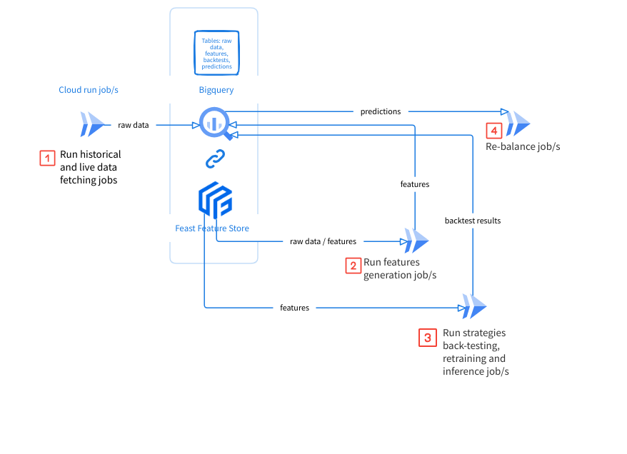

Overview
cryptorick is a Python framework for developing, researching and running quantitative crypto trading strategies. It helps build, integrate and orchestrate researching and trading components and tasks. The doc is intended to help researchers start researching, developing and testing ideas, features and strategies.
Infrastructure
cryptorick supports the following functions:
Data collection jobs
src/pipelines/fetch_ccxt_data_bq/python3 -m src.pipelines.fetch_ccxt_data_bq.fetch_ccxt_data_bq \ --trading_exchange_data_name kucoin \ --api_name kucoin \ --asset_type spot \ --from_datetime "2017-01-01 00:00:00"
Feature engineering jobs
src/pipelines/features/python3 -m src.pipelines.features.create_features \ --trading_exchange_data_name kucoin
Strategy jobs (train, infer, backtest)
src/pipelines/strategies/python3 -m src.pipelines.strategies.template_strategy.template_lgbm \ --infer --trading_exchange_data_name kucoin --trading_exchange_name kucoinfutures --api_name kucoin
Rebalancing jobs
src/pipelines/rebalance/python3 -m src.pipelines.rebalance.rebalance_daily \ --trading_exchange_name kucoinfutures \ --trading_exchange_data_name kucoin \ --api_name kucoin_prod
[TODO] Getting started:
Pull researcher’s github branch
Edit config file if needed
src/config/__init__.pySet up feast feature store for first time or to deploy new features added to
src/feast_repo/features_definitions.yamlpython3 -m src.pipelines.feast_repo.create_store